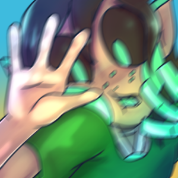

My Contributions: Everything
In a distant, dystopian future, there is only one place left in the world: Atlas City. Twelve levels high, domed to protect from the air, and ruled entirely by a megacorporation called the Variation Organization of Cybernetics.
Atlas City does have its problems, though, and one that the Variation Organization faces is how its artificial intelligence eventually gain sentience. It has brought an end to many uncompleted projects, and now one of them is here to pester you on your desktop.
They may have lots of little secrets to discover...